Choose the colours¶
This guide is for the colours of the terminal interface and of the command line. The terminal interface draws in a theme: SampleKit's own, dark or light, unless you choose another. Twelve are built in, each drawn below by the terminal interface itself, and you can make your own.
Choose a theme¶
Press T on the collection, on a sample or on the start page: the list of
every theme opens, those SampleKit has first, then your own. The screen takes
the theme under the cursor at once, so that you see it before you keep it;
Enter keeps it, Esc gives back the one there was.
What Enter keeps is yours, not the project's: the theme for this folder,
remembered with it as its filter and its columns are, and your last choice,
which a project naming no theme of its own opens in. The theme in force is,
first to last:
the theme you chose with
Tin this folder;the theme the project names,
theme = "nord"in its[colors], shared with whoever opens it (the list says this project names nord);the last theme you chose with
Tanywhere;SampleKit's own:
samplekit-dark, orsamplekit-lightwhere the terminal says its background is light (in the variableCOLORFGBG, which some terminals set). That is where the terminal draws every colour, as it says inCOLORTERM(truecoloror24bit), and in Windows Terminal; elsewhere, the old Windows console, macOS's Terminal or a session over SSH for instance, the default isterminal, your terminal's own sixteen colours, which any terminal draws.
Choosing in a project the theme it names keeps nothing for the folder, so that you see the project's theme if it changes. A theme named that this machine does not have, one of your own removed or one a colleague's project names, is said on the status line, and the next in the list is taken.
The command line has no theme: it writes on the terminal's own background, in the terminal's sixteen colours, the project's roles over them.
How [colors] works¶
A project's .samplekitrc changes colours by role, in the section
[colors] (the key keeps its American spelling), over whichever theme is in
force. Each role is one kind of thing on the screen: a value not current, a
unit, a key named at the foot. Twenty roles:
Role |
What it colours |
|---|---|
|
the terminal interface's whole screen |
|
its text, where nothing else colours it |
|
a value whose formula failed |
|
a value that is not current |
|
a value written by hand over its formula |
|
a computed value that is current |
|
the line or item under the cursor, the basket |
|
attributes, and an attribute's value |
|
a link, underlined |
|
a value and its uncertainty, drawn bold |
|
a unit, after a number and in a header |
|
tables |
|
a table's index column |
|
keys, in the help and at the foot |
|
secondary text |
|
messages |
|
errors |
|
the name in the title bar, a computation in progress |
|
what waits to be written, in italics |
|
the background of the cursor's line, the cell typed in reversed on it in the typing mode |
[colors]
theme = "nord" # this project's theme, unless you chose one with T here
outdated = "#ff8800" # and over it, outdated values in orange
A colour is written in one of three ways:
default, the terminal's own text colour (or its background, forbackground);one of the terminal's sixteen by name,
redorlight-bluefor instance (the configuration reference lists them): the terminal's theme decides its shade;#rrggbb, a colour fixed whatever the terminal's theme, which the terminal must be able to draw (most do).
A role or a colour SampleKit does not know is refused, with the line and
what it accepts. What waits to be written is drawn in italics as well as in
the waiting colour: the italics tell it apart whatever the colour.
Your own themes¶
A theme of your own is a file in the folder themes of SampleKit's
configuration folder: ~/.config/samplekit/themes/ on Linux (or under
$XDG_CONFIG_HOME), ~/Library/Application Support/samplekit/themes/ on
macOS, %APPDATA%\samplekit\themes\ on Windows. The variable
SAMPLEKIT_CONFIG_DIR names another configuration folder. The file's name
is the theme's: my-nord.toml is my-nord, listed by T after the themes
SampleKit has.
The file is a [colors] table, with the theme it starts from above it,
base: each role the table leaves out is the base's. Without base, it
starts from samplekit-dark; a base may be another of your own.
# My theme: Nord, its accent purple and the cursor's line lighter. Saved in
# SampleKit's themes folder, as themes/my-nord.toml, it is named my-nord.
base = "nord"
[colors]
accent = "#b48ead" # nord15
line = "#434c5e" # nord2
A file that does not read, a base no theme bears, a role or a colour that is
none, or a name SampleKit's own themes already have: the theme is left out,
and the terminal interface says why as it opens, and at the foot of T's
list.
The themes SampleKit has¶
Below, each theme SampleKit has, by the name T lists and theme = takes,
its file and the terminal interface drawn in it. You can also copy a file's
[colors] table into a .samplekitrc, or start your own from it. The
picture is the screen of a sample of the demo, steel-01, its width typed
again: what it feeds is outdated, the change waits.
terminal is the one theme without a file: the terminal's sixteen colours,
as the command line draws them, on the terminal's own background.
SampleKit dark¶
SampleKit's own theme for a dark terminal, and the default. Each role has a colour of its own, and every colour is chosen to be read: the text and the values at a contrast of 7:1 at least against the background, and against the cursor's line, every other role at 4.5:1, by WCAG's measure. A test computes these contrasts, so that a colour changed cannot fall below them.
# SampleKit dark, SampleKit's own theme for a dark terminal: T in the terminal
# interface chooses it, as theme = "samplekit-dark" in a project's [colors]
# does. Each colour is its role's alone, and read: the text and the values at
# 7:1 at least against the background and the cursor's line, every other role
# at 4.5:1, by WCAG's contrast.
[colors]
background = "#11151c" # a blue-black, darker than most terminals', for the colours to stand on
foreground = "#d1d7e0" # a cool light grey: long reading, softer than white
failed = "#f87171" # red, the colour of what went wrong
outdated = "#fb923c" # orange, a warning: what no longer rests on its measurements
edited = "#c084fc" # purple, a hand over a formula, apart from every state of a computation
current = "#4ade80" # green, what is right as it is
selected = "#a3e635" # lime, the basket and the item chosen, a green yellower than current
attribute = "#60a5fa" # blue, what describes a sample rather than measures it
link = "#7dd3fc" # sky, lighter than an attribute, and underlined
value = "#f5f7fa" # near white, bold: a number is what the screen is for
unit = "#2dd4bf" # teal, after the number it belongs to, no longer the accent's cyan
table = "#818cf8" # indigo, a table among values, between the blues and the purple
index = "#f9a8d4" # pink, a table's index column, set apart from its values
key = "#fde047" # yellow, bold: a key named reads first along the foot
muted = "#8b949e" # grey, what explains rather than says, still near 6:1
message = "#e7d7b5" # sand, what the TUI says, warm beside the cool text
error = "#fb7185" # rose, an error said, pinker than a failed value
accent = "#22d3ee" # cyan, SampleKit's own: its name, its logo, a computation under way
waiting = "#f0abfc" # orchid, in italics: what waits to be written
line = "#232a36" # a step above the background, the cursor's line, the text on it at 10:1
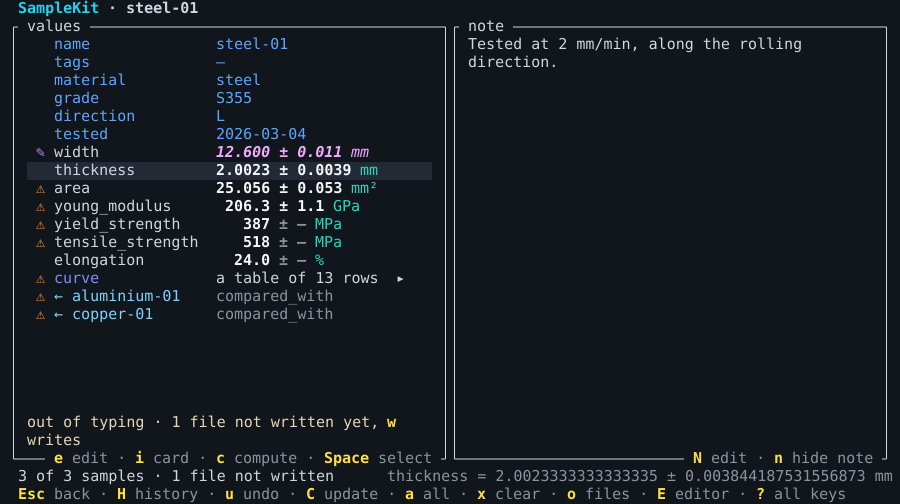
SampleKit light¶
SampleKit's own theme for a light terminal, the default where the terminal says its background is light, made to the same contrasts.
# SampleKit light, SampleKit's own theme for a light terminal: T in the terminal
# interface chooses it, as theme = "samplekit-light" in a project's [colors]
# does. Each colour is its role's alone, and read: the text and the values at
# 7:1 at least against the background and the cursor's line, every other role
# at 4.5:1, by WCAG's contrast.
[colors]
background = "#fbfbfa" # a warm white, short of pure white's glare
foreground = "#24292f" # near black: long reading, softer than black
failed = "#b91c1c" # red, the colour of what went wrong
outdated = "#b33c0a" # burnt orange, a warning: what no longer rests on its measurements
edited = "#7e22ce" # purple, a hand over a formula, apart from every state of a computation
current = "#14773a" # green, what is right as it is
selected = "#48730e" # olive, the basket and the item chosen, a green yellower than current
attribute = "#1d4ed8" # blue, what describes a sample rather than measures it
link = "#0369a1" # sky, apart from an attribute's blue, and underlined
value = "#0b0f14" # black, bold: a number is what the screen is for
unit = "#0d6f68" # teal, after the number it belongs to, no longer the accent's cyan
table = "#4338ca" # indigo, a table among values, between the blues and the purple
index = "#be185d" # raspberry, a table's index column, set apart from its values
key = "#975b06" # ochre, bold: the light theme's yellow, dark enough to read
muted = "#5c6570" # slate, what explains rather than says, still at 5.7:1
message = "#6b5426" # umber, what the TUI says, warm beside the cool text
error = "#be123c" # crimson, an error said, pinker than a failed value
accent = "#0e7490" # cyan, SampleKit's own: its name, its logo, a computation under way
waiting = "#a21caf" # magenta, in italics: what waits to be written
line = "#e7eaef" # a step below the background, the cursor's line, the text on it at 12:1
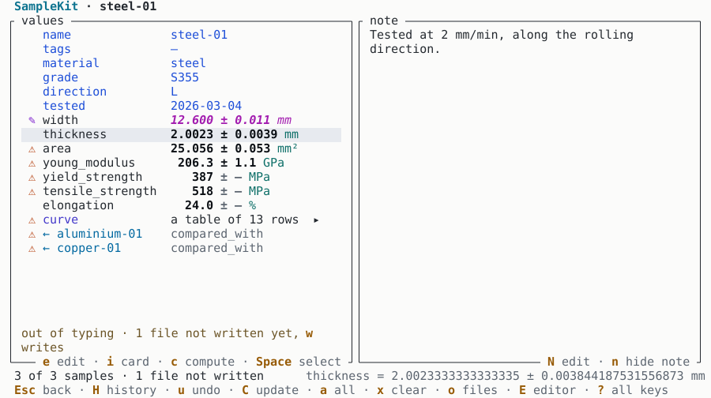
Catppuccin Mocha¶
Catppuccin's palette, catppuccin.com, its dark flavour Mocha.
# Catppuccin Mocha, built into SampleKit: T in the terminal interface chooses it,
# as theme = "catppuccin-mocha" in a project's [colors] does; or copy this table.
[colors]
background = "#1e1e2e" # the screen
foreground = "#cdd6f4" # its text
failed = "#f38ba8" # red
outdated = "#f9e2af" # yellow
edited = "#fab387" # peach
current = "#a6e3a1" # green
selected = "#94e2d5" # teal
attribute = "#89b4fa" # blue
link = "#74c7ec" # sapphire
value = "#cdd6f4" # text
unit = "#89dceb" # sky
table = "#cba6f7" # mauve
index = "#f5e0dc" # rosewater
key = "#b4befe" # lavender
muted = "#6c7086" # overlay0
message = "#a6adc8" # subtext0
error = "#eba0ac" # maroon
accent = "#f5c2e7" # pink
waiting = "#f2cdcd" # flamingo
line = "#313244" # surface0
Download catppuccin-mocha.toml
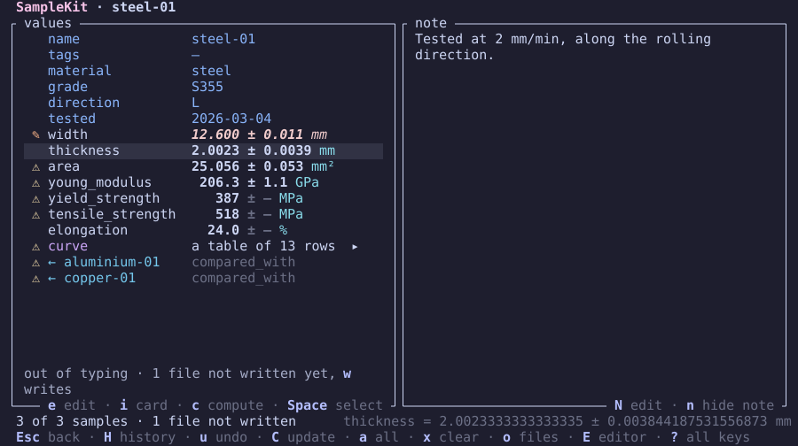
Catppuccin Latte¶
Catppuccin's palette, catppuccin.com, its light flavour Latte.
# Catppuccin Latte, built into SampleKit: T in the terminal interface chooses it,
# as theme = "catppuccin-latte" in a project's [colors] does; or copy this table.
[colors]
background = "#eff1f5" # the screen
foreground = "#4c4f69" # its text
failed = "#d20f39" # red
outdated = "#df8e1d" # yellow
edited = "#fe640b" # peach
current = "#40a02b" # green
selected = "#179299" # teal
attribute = "#1e66f5" # blue
link = "#209fb5" # sapphire
value = "#4c4f69" # text
unit = "#04a5e5" # sky
table = "#8839ef" # mauve
index = "#dc8a78" # rosewater
key = "#7287fd" # lavender
muted = "#9ca0b0" # overlay0
message = "#6c6f85" # subtext0
error = "#e64553" # maroon
accent = "#ea76cb" # pink
waiting = "#dd7878" # flamingo
line = "#ccd0da" # surface0
Download catppuccin-latte.toml
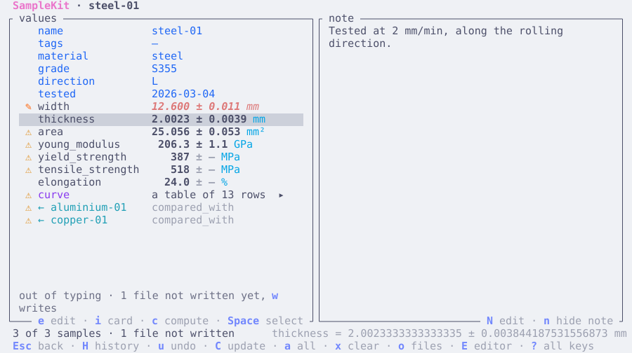
Dracula¶
Dracula's palette, draculatheme.com.
# Dracula, built into SampleKit: T in the terminal interface chooses it,
# as theme = "dracula" in a project's [colors] does; or copy this table.
[colors]
background = "#282a36" # the screen
foreground = "#f8f8f2" # its text
failed = "#ff5555" # red
outdated = "#f1fa8c" # yellow
edited = "#ffb86c" # orange
current = "#50fa7b" # green
selected = "#8be9fd" # cyan
attribute = "#bd93f9" # purple
link = "#8be9fd" # cyan
value = "#f8f8f2" # foreground
unit = "#8be9fd" # cyan
table = "#ff79c6" # pink
index = "#50fa7b" # green
key = "#8be9fd" # cyan
muted = "#6272a4" # comment
message = "#f1fa8c" # yellow
error = "#ff5555" # red
accent = "#bd93f9" # purple
waiting = "#ff79c6" # pink
line = "#44475a" # current line
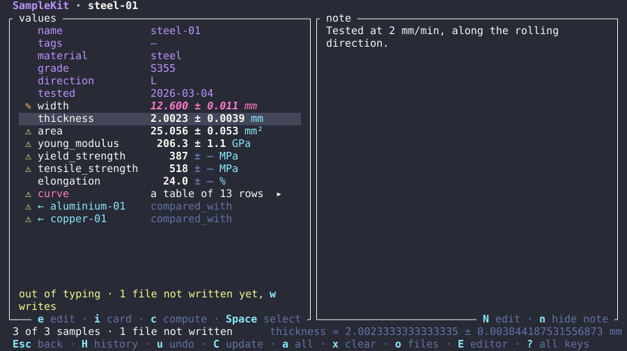
Nord¶
Nord's palette, nordtheme.com, nord0 to nord15.
# Nord, built into SampleKit: T in the terminal interface chooses it,
# as theme = "nord" in a project's [colors] does; or copy this table.
[colors]
background = "#2e3440" # the screen
foreground = "#d8dee9" # its text
failed = "#bf616a" # nord11
outdated = "#ebcb8b" # nord13
edited = "#d08770" # nord12
current = "#a3be8c" # nord14
selected = "#8fbcbb" # nord7
attribute = "#81a1c1" # nord9
link = "#88c0d0" # nord8
value = "#d8dee9" # nord4
unit = "#88c0d0" # nord8
table = "#5e81ac" # nord10
index = "#8fbcbb" # nord7
key = "#88c0d0" # nord8
muted = "#4c566a" # nord3
message = "#ebcb8b" # nord13
error = "#bf616a" # nord11
accent = "#88c0d0" # nord8
waiting = "#b48ead" # nord15
line = "#3b4252" # nord1
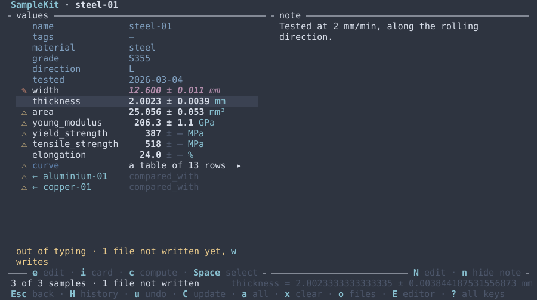
Tokyo Night¶
Tokyo Night's palette, github.com/folke/tokyonight.nvim, its style Night.
# Tokyo Night, built into SampleKit: T in the terminal interface chooses it,
# as theme = "tokyo-night" in a project's [colors] does; or copy this table.
[colors]
background = "#1a1b26" # the screen
foreground = "#c0caf5" # its text
failed = "#f7768e" # red
outdated = "#e0af68" # yellow
edited = "#ff9e64" # orange
current = "#9ece6a" # green
selected = "#73daca" # teal
attribute = "#7aa2f7" # blue
link = "#7dcfff" # cyan
value = "#c0caf5" # foreground
unit = "#7dcfff" # cyan
table = "#bb9af7" # purple
index = "#73daca" # teal
key = "#7dcfff" # cyan
muted = "#565f89" # comment
message = "#737aa2" # dark5
error = "#f7768e" # red
accent = "#7aa2f7" # blue
waiting = "#bb9af7" # purple
line = "#292e42" # background highlight
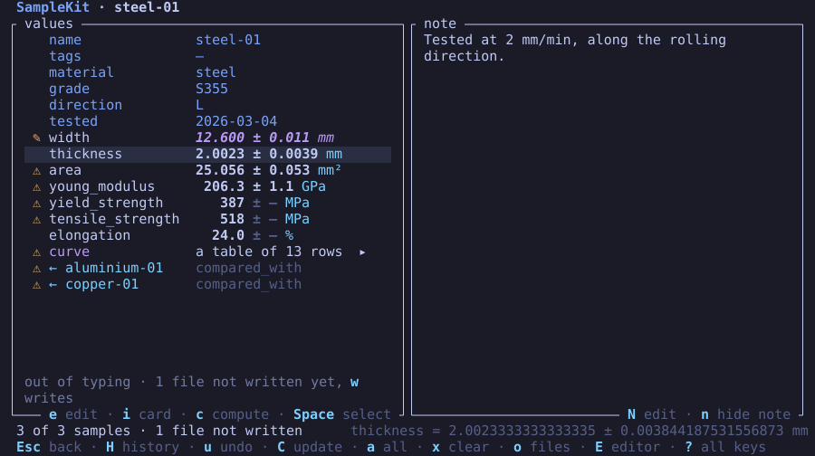
Gruvbox dark¶
Gruvbox's palette, github.com/morhetz/gruvbox, dark.
# Gruvbox dark, built into SampleKit: T in the terminal interface chooses it,
# as theme = "gruvbox-dark" in a project's [colors] does; or copy this table.
[colors]
background = "#282828" # the screen
foreground = "#ebdbb2" # its text
failed = "#fb4934" # red
outdated = "#fabd2f" # yellow
edited = "#fe8019" # orange
current = "#b8bb26" # green
selected = "#8ec07c" # aqua
attribute = "#83a598" # blue
link = "#83a598" # blue
value = "#ebdbb2" # fg
unit = "#8ec07c" # aqua
table = "#d3869b" # purple
index = "#8ec07c" # aqua
key = "#8ec07c" # aqua
muted = "#928374" # gray
message = "#a89984" # fg4
error = "#fb4934" # red
accent = "#fe8019" # orange
waiting = "#d3869b" # purple
line = "#3c3836" # bg1
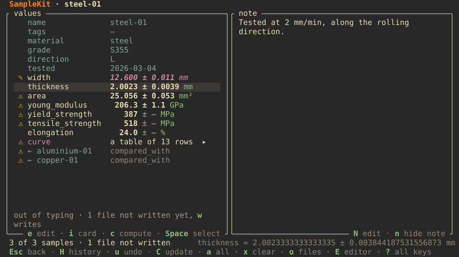
Gruvbox light¶
Gruvbox's palette, github.com/morhetz/gruvbox, light.
# Gruvbox light, built into SampleKit: T in the terminal interface chooses it,
# as theme = "gruvbox-light" in a project's [colors] does; or copy this table.
[colors]
background = "#fbf1c7" # the screen
foreground = "#3c3836" # its text
failed = "#9d0006" # red
outdated = "#b57614" # yellow
edited = "#af3a03" # orange
current = "#79740e" # green
selected = "#427b58" # aqua
attribute = "#076678" # blue
link = "#076678" # blue
value = "#3c3836" # fg
unit = "#427b58" # aqua
table = "#8f3f71" # purple
index = "#427b58" # aqua
key = "#427b58" # aqua
muted = "#928374" # gray
message = "#7c6f64" # fg4
error = "#9d0006" # red
accent = "#af3a03" # orange
waiting = "#8f3f71" # purple
line = "#ebdbb2" # bg1
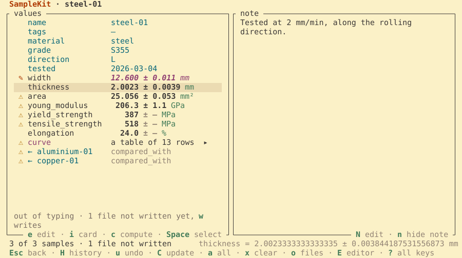
Solarized dark¶
Solarized's palette, ethanschoonover.com/solarized, dark.
# Solarized dark, built into SampleKit: T in the terminal interface chooses it,
# as theme = "solarized-dark" in a project's [colors] does; or copy this table.
[colors]
background = "#002b36" # the screen
foreground = "#839496" # its text
failed = "#dc322f" # red
outdated = "#b58900" # yellow
edited = "#cb4b16" # orange
current = "#859900" # green
selected = "#2aa198" # cyan
attribute = "#268bd2" # blue
link = "#6c71c4" # violet
value = "#839496" # base0
unit = "#2aa198" # cyan
table = "#6c71c4" # violet
index = "#2aa198" # cyan
key = "#93a1a1" # base1
muted = "#586e75" # base01
message = "#93a1a1" # base1
error = "#dc322f" # red
accent = "#d33682" # magenta
waiting = "#d33682" # magenta
line = "#073642" # base02
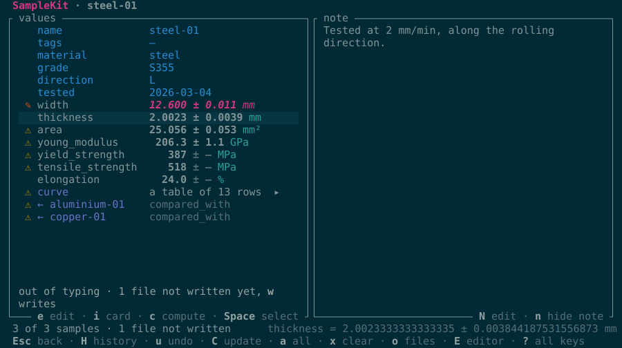
Solarized light¶
Solarized's palette, ethanschoonover.com/solarized, light.
# Solarized light, built into SampleKit: T in the terminal interface chooses it,
# as theme = "solarized-light" in a project's [colors] does; or copy this table.
[colors]
background = "#fdf6e3" # the screen
foreground = "#657b83" # its text
failed = "#dc322f" # red
outdated = "#b58900" # yellow
edited = "#cb4b16" # orange
current = "#859900" # green
selected = "#2aa198" # cyan
attribute = "#268bd2" # blue
link = "#6c71c4" # violet
value = "#657b83" # base00
unit = "#2aa198" # cyan
table = "#6c71c4" # violet
index = "#2aa198" # cyan
key = "#586e75" # base01
muted = "#93a1a1" # base1
message = "#586e75" # base01
error = "#dc322f" # red
accent = "#d33682" # magenta
waiting = "#d33682" # magenta
line = "#eee8d5" # base2
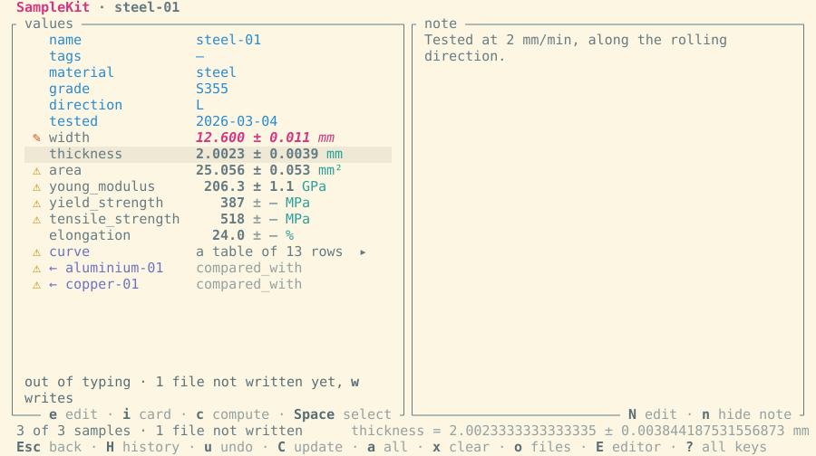
See also¶
[colors]in the configuration reference.